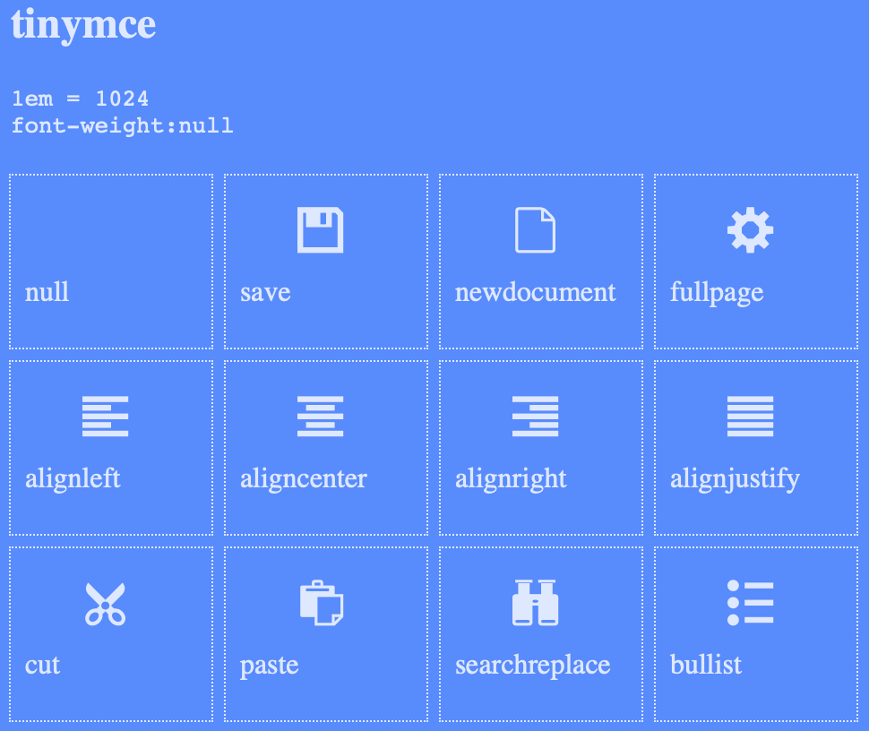

TinyMCE 是一个功能强大的富文本编辑器:
- 支持从 Word 中复制的文本格式
- 拖拽修改图片的大小
- 表格拖拽修改单元格大小
- 提供了三种编辑模式
- Full featured: 默认显示工具栏
- Inline: 编辑器的到焦点时才显示工具栏
- Distraction Free: 选中文本后才显示工具栏
- 同一页面中可以创建多个编辑器
- 界面美观简洁, 使用 CSS 修改样式很方便, 工具栏按钮使用 SVG 图片
- 插件开发简单, 甚至不需要开发插件就能向工具栏插入按钮
TinyMCE 提供了 cloud 版本, 也可以下载到本地使用.
使用 TinyMCE 只需要 3 步:
- 引入 TinyMCE
- 为 TinyMCE 准备一个 DOM
- 基于准备好的 DOM，初始化 TinyMCE 实例
下图是使用默认参数创建的 TinyMCE 编辑器:
代码如下:
1 |
|
官方提供了非常丰富的文档, 请访问 https://www.tiny.cloud/docs 进行阅读, 了解 TinyMCE 更多的使用方法.
获取和修改编辑器内容
获取编辑器中的内容调用函数: getContent()
向编辑器内插入内容调用函数: insertContent()
设置编辑器的内容: setContent()
1 | tinymce.init({ |
Inline 编辑模式
实现 Inline 编辑模式只需要设置 inline 为 true 即可:
1 | tinymce.init({ |
Distraction Free 编辑模式
实现 Distraction Free 编辑模式需要修改 inline, theme 两个属性, 此模式下的工具栏配置使用 selection_toolbar:
1 | tinymce.init({ |
更换语言
默认是英文的, 使用中文需要下载中文语言包, 然后设置 language 为 zh_CN:
下载中文语言包: 访问语言包下载页, 选择
Chinese (China)然后点击下载复制下载得到的
zh_CN.js到 TinyMCE 的langs目录创建编辑器时设置 language 为
zh_CN:1
2
3
4tinymce.init({
selector: '#editor',
language: 'zh_CN',
});
菜单和工具栏
Full featured 和 Inline 编辑模式下定制工具栏设置属性 toolbar (字符串格式, 每一个工具栏按钮就是一个插件, 插件之间使用空格分隔):
1 | tinymce.init({ |
移除菜单栏设置 menubar 为 false 即可:
1 | tinymce.init({ |
想了解具体有哪些插件可用, 请访问 Add Plugins to TinyMCE 进行查看，也可参考 TinyMCE 工具栏配置详解.
插件开发
Create a Plugin 中介绍了怎么开发插件, 这里介绍另一种简单直接的方式在 setup() 函数中向工具栏插入一个按钮:
1 | tinymce.init({ |
说明:
addButton()的第一个参数为插件的名字, 配置工具栏 toolbar 时使用icon为按钮的图标名字, 此按钮的 class 为mce-ico mce-i-code(按钮的名字紧跟mce-i-后面)也许你会问: 怎么知道图标的名字是什么呢?
TinyMCE 的主题使用的 SVG 图标文件在
skins/lightgray/fonts/tinymce.svg, 把它拖拽到 http://jsfiddle.net/iegik/r4ckgdc0 中就会显示出所有图标和图标的名字, 选择合适的图标使用:如果没有合适的图标可用, 可以修改 TinyMCE 提供的图标字体文件, 也可以根据生成的按钮的 class, 使用 CSS 修改按钮的样式.
title为鼠标移动到按钮上的提示信息点击按钮后执行
onclick()函数
监听编辑器内容变化
使用下面的代码监听编辑器的内容变化:
1 | tinymce.init({ |
到此 TinyMCE 的使用已经介绍的差不多了, 接下来就介绍 Vue 中使用 TinyMCE.
销毁编辑器
当创建的 TinyMCE 编辑器对象不再需要时把它们给销毁掉, 有 2 种方法进行销毁:
tinymce.remove('#editorId')editor.remove()(创建成功时保存的 editor 对象)
Vue 中使用 TinyMCE
下面介绍使用 Vue 把 TinyMCE 封装为编辑器组件 RichText, 使用 v-model 自动获取编辑的内容, 编辑器的 DOM 和 id 自动生成, RichText 在生命周期结束的时候自动销毁 TinyMCE 释放内存:
在页面的入口页面中引入 TinyMCE:
1
2
3
4
5
6
7
8
9
10
11
12
13
14
15
16
17
18
<html lang="en">
<head>
<meta charset="utf-8">
<title>Foo</title>
</head>
<body>
<div id="app"></div>
<!-- 引入 TinyMCE -->
<script src="/static/tinymce/tinymce.min.js"></script>
<!-- built files will be auto injected -->
</body>
</html>封装 TinyMCE 为组件 RichText, 保存为
src/components/RichText.vue:1
2
3
4
5
6
7
8
9
10
11
12
13
14
15
16
17
18
19
20
21
22
23
24
25
26
27
28
29
30
31
32
33
34
35
36
37
38
39
40
41
42
43
44
45
46
47
48
49
50
51
52
53
54
55
56
57
58
59
60
61
62<template>
<div class="rich-text">
<div :id="editorId"></div>
</div>
</template>
<script>
export default {
props: {
html: { type: String, default: '<p></p>' }, // HTML 内容
},
model: {
prop : 'html',
event: 'text-changed' // 编辑器的内容发生变化后触发, 参数为编辑的 HTML
},
data() {
return {
editor: null,
};
},
mounted() {
const self = this;
tinymce.init({
selector: `#${this.editorId}`,
setup: function(editor) {
// 编辑器内容发生变化后更新 html 的内容
editor.on('change keyup', () => {
self.$emit('text-changed', editor.getContent());
});
}
}).then(editors => {
this.editor = editors[0];
this.editor.setContent(this.html);
});
},
computed: {
// 使用时间戳和随机数生成 editorId
editorId() {
const time = new Date().getTime();
const rand = Math.floor(Math.random() * 100000000);
return `editor-${time}-${rand}`;
},
},
beforeDestroy() {
// 销毁编辑器
this.editor.remove();
},
watch: {
// 外部修改 v-model 绑定的 html 的值时更新编辑器的内容
html(newValue, oldValue) {
if (newValue != this.editor.getContent()) {
this.editor.setContent(newValue || '<p></p>');
}
}
},
};
</script>
<style lang="scss">
</style>watch.html()在每次编辑后都会被触发调用, 是为了实现当绑定的 html 被外部修改时自动更新编辑器的内容, 但是 html 被外部修改的场景估计很少 (本来目的就是要用 RichText 来编辑), 当编辑器中的内容很长时, 比较字符串的效率不高, 所以实际项目中可以考虑删除watch.html()以提高效率, 外部真需要修改 html 的时候使用 ref 的方式直接调用this.$refs.richText.editor.setContent()就可以了.使用插件 RichText:
1
2
3
4
5
6
7
8
9
10
11
12
13
14
15
16
17
18
19
20
21
22
23<template>
<div class="editor-demo">
<RichText v-model="html" />
<div v-html="html"></div>
</div>
</template>
<script>
import RichText from '@/components/RichText';
export default {
components: { RichText },
data() {
return {
html: '封装 TinyMCE 为组件 RichText',
};
}
};
</script>
<style lang="scss">
</style>编辑的时候, 变量 html 的值自动更新了, 不需要使用
editor.getContent()进行获取,.可能会在很多页面中都会使用到 RichText, 可以在 main.js 中全局注册 RichText, 其他页面和组件中不用再次注册就可以直接使用了:
1
2import RichText from '@/components/RichText';
Vue.component('RichText', RichText);
实际项目中的 RichText
了解怎么封装 TinyMCE 为组件后, 实际开发中还需要根据业务和设计进一步进行定制, 最后附上一个实际项目中的 RichText 组件作为参考:
1 | <template> |
1 | <template> |
项目中根据不同的场景提供不同的工具栏, 而且一个项目里的编辑场景基本也是固定的几种, 所以上面的实现提供了几种固定的工具栏以供选择, 使用的时候传入工具栏下标参数指定即可. 新添加的工具栏按钮也比较固定, 为了方便也是直接在 setup() 中创建, 省得去使用标准的插件开发方式创建, 然后在 plugins 中引入. 编辑器使用的 DOM 的 id 使用时间戳加随机数生成, 保证了每次使用 RichText 时都会生成唯一的 id, 省去了手动指定 id 的麻烦.